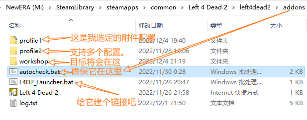

L4D2 OfflineAssistant
This is an addon designed for Chinese players in the beginning.
这个程序最初是为中国区玩家设计的。
游戏：Left 4 Dead 2(求生之路2)
针对：游戏附件（MODs）
目标：确保游戏启动时所有准备好的附件(Mod)都在目录(addon/workshop)中。
效果：
- 确保不会被清除
- 确保附件存在
为什么需要
对于中国区玩家，在Steam创意工坊下载Mod往往需要开启加速器。而这个游戏在游戏内下载，如果下一次启动时没有开启加速器，那么这一次下载的Mod都会被清除。
在某一次进入游戏内附件管理界面后，退出时会保存当前勾选配置，而未加载出的附件则会在下次加载出的同时被设为“勾选”，无论您原本是否勾选。
我知道，虽然有一种广传的方法避免从创意工坊拉取，但是那种方法会导致图片和描述无法加载、描述乱码、无法链接创意工坊查看详情等问题。
指的是：将附件从'addons/workshop'移出到'addons'
使用本程序，您可以实现：资源来自本地，描述来自网络。
这样一来，可以确保每次启动所有附件都存在，且描述将会从互联网加载，无描述失效、无乱码、便于管理！
安装、配置及使用方法
安装
下载并解压项目，并确保autocheck.bat和L4D2_Launcher.bat位于SteamLibrary\steamapps\common\Left 4 Dead 2\left4dead2\addons目录下。
其实只要确保前者，不过后者就得配置路径了。
然后为L4D2_Launcher.bat添加快捷方式到..(桌面？菜单列表？)
配置
使用前您应该确保您已配置。在addons\下准备好一个文件夹，尽量不要特殊字符包括中文，然后将autocheck.bat中的profile1替换成新文件夹的名称。
1set profile=profile1
- 您也可以将新文件夹命名为profile1。
- 所有面向用户的设置项尽在
rem Settings语句下到空行截止。
将附件放入新文件夹中。
使用
运行L4D2_Launcher.bat即可。
图示
文件描述（像这就配好了的）：

我把快捷方式弄到菜单列表里去了：

[C:\ProgramData\Microsoft\Windows\Start Menu\Programs\Steam]
或
[%AppData%\Steam]
原理
- 检查在
addons/workshop/中的标记文件Amark.txt是否存在 - 使用
robocopy命令从指定目录恢复/补充附件。
可选更改
因为我也不太确定附件相关的机制，可能标记文件压根不会被删除，所以以下提供一个修改方法，供选用。如果有哪位热心的网友能给我讲讲机制，那可太好了！
将结构：
x1REM 原代码2:loop34 if exist "%markpath%" (5 ...a6 goto loop7 ) else (8 ...b9 )10改为结构：
xxxxxxxxxx51REM 改动后的代码2:loop3 ...b4 goto loop5 其中，...a和...b代表省略的内容，...b中的echo mark>>"%markpath%"可以一并删去。如此一来，robocopy会一直工作，一直检查并确保文件存在。(robocopy会跳过已存在文件)
没有robocopy可用？
您的电脑真是极品！
现在极少电脑无法使用这个命令。
提供两个解决方法：
- 换个新电脑 (o_<) wink~
- 去下载一个
robocopy.exe（推荐） - 使用我先前的一个项目：
mcmod。这个项目使用copy或xcopy命令，您只需配置好路径即可使用。同时，您仍然可以使用本项目的L4D2_Launcher.bat，只需将其中调用的autocheck.bat更改为run.bat以匹配mcmod项目。 项目链接：LiuJiewnTT/mcmod
关于项目
项目链接：https://github.com/LiuJiewenTT/L4D2_OfflineAssistant
授权：本项目使用MIT开源协议。请署名作者及协议。协议内容见LICENSE文件。